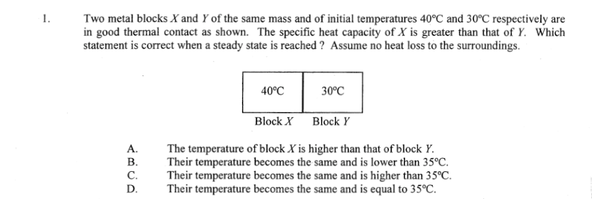

Two blocks in contact
Final temperatures are equal; which block's temperature changes less?

Section 2.3
What the hot body gives out, the cold body takes in: write that as one equation and solve for the final temperature.
Students should be able to:
realise that heat is the energy transferred as a result of the temperature difference between two objects
determine the specific heat capacity of a substance
solve problems involving heat capacity and specific heat capacity
Energy is not created or destroyed. When a hot body and a cold body reach a common temperature, the energy released by the hot body equals the energy absorbed by the cold body plus any energy lost to the surroundings.
This form assumes no heat loss. Body 1 starts hot at \(T_1\); body 2 starts cold at \(T_2\); \(T\) is the common final temperature. Use \(C\,\Delta T\) for a body given as a heat capacity (a cup, a teapot).
0.2 kg of water at 30 °C is mixed with 0.2 kg of water at 70 °C, with no heat loss. The final temperature is
C. Equal \(mc\), so the hot water falls by as much as the cold water rises: halfway, 50 °C. B adds temperatures, which never works. A and D would need unequal masses.
A cold metal spoon is put into a large cup of hot tea. Compared with the tea, the spoon's temperature change is
B. Equal energies, \(\Delta T = E/C\): the small \(C\) of the spoon gives a large change. C confuses equal energy with equal temperature change. D: metals have a lower \(c\) than water-based drinks.
0.30 kg of water at 100 °C is poured into a teapot of heat capacity 400 J °C⁻¹ at 20 °C. Ignoring losses, find the final temperature.
T ≈ 81 °C
Heat a solid of known mass in boiling water (so it starts at 100 °C), drop it quickly into cool water of known mass, stir, and read the highest temperature. The energy the water gained is the energy the solid lost.
Energy lost while transferring the solid makes the water's gain too small, so the calculated \(c_s\) comes out too small. Hot water carried over with the solid has the opposite effect.
A 50 g metal cube at 100 °C is dropped into 0.15 kg of water at 22 °C. The highest water temperature is 25 °C. Find \(c\) of the metal, ignoring losses.
c ≈ 500 J kg⁻¹ °C⁻¹
In the method of mixtures, the hot solid cools in the air for a few seconds on its way to the water. The calculated specific heat capacity of the solid will be
A. We still assume the solid fell all the way from 100 °C, but less energy reaches the water: the water's gain (top of the fraction) is too small, so \(c_s\) is too small. D: stirring helps accuracy; it does not bias the result.